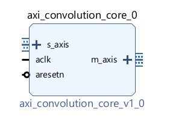
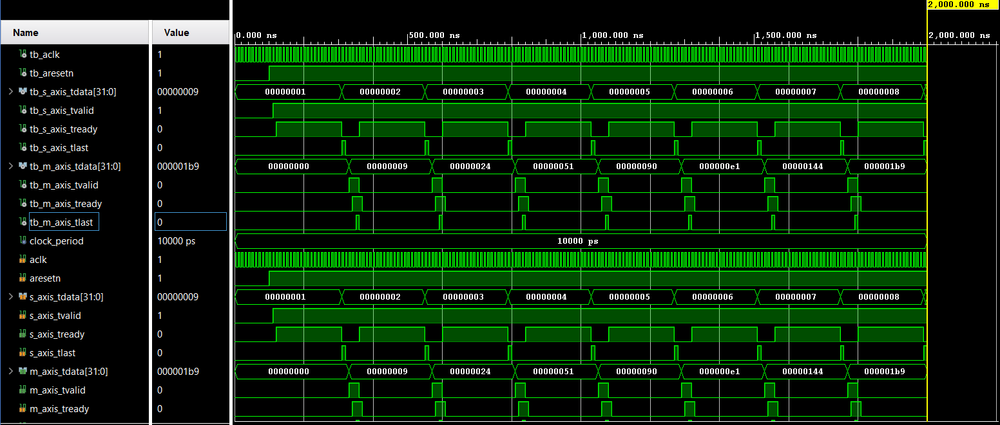

AXI-Stream Convolution Core
github.com/reese-engelke/axis_convolution_core
A reusable convolution IP with a generic matrix size. The core first streams in the kernel coefficients, then the sample window, computes the element-wise products, accumulates them, and presents the result on the master AXI-Stream interface.
- Slave stream: kernel, then sample window
- Master stream: 32-bit accumulated product
- Valid / ready / last handshaking on both sides


RTL
entity axi_convolution_core is
generic (
matrix_size : integer := 3
);
Port (
aclk : in STD_LOGIC;
aresetn : in STD_LOGIC;
s_axis_tdata : in STD_LOGIC_VECTOR(31 downto 0);
s_axis_tvalid: in STD_LOGIC;
s_axis_tready: out STD_LOGIC;
s_axis_tlast: in STD_LOGIC;
m_axis_tdata : out STD_LOGIC_VECTOR(31 downto 0);
m_axis_tvalid: out STD_LOGIC;
m_axis_tready: in STD_LOGIC;
m_axis_tlast : out STD_LOGIC
);
end axi_convolution_core;
architecture Behavioral of axi_convolution_core is
type t_state is (ST_IDLE, ST_STATE1, ST_STATE2, ST_STATE3, ST_STATE4);
signal st_state : t_state := ST_IDLE;
type t_matrix_1 is array (0 to matrix_size-1, 0 to matrix_size-1) of integer range 0 to 255;
signal q_kernel : t_matrix_1;
signal q_sample : t_matrix_1;
type t_matrix_2 is array (0 to matrix_size-1, 0 to matrix_size-1) of integer range 0 to 65025;
signal q_product : t_matrix_2;
signal q_shift_reg : integer;
begin
process(aclk, aresetn)
variable v_acc : integer range 0 to 585225;
begin
if(aresetn = '0') then
s_axis_tready <= '0';
m_axis_tdata <= (others=>'0');
m_axis_tvalid <= '0';
m_axis_tlast <= '0';
q_kernel <= (others=>(others=>0));
q_sample <= (others=>(others=>0));
q_product <= (others=>(others=>0));
q_shift_reg <= 0;
elsif (rising_edge(aclk)) then
case st_state is
when ST_STATE1 =>
q_shift_reg <= q_shift_reg + 1;
if (q_shift_reg<(matrix_size**2)) then
q_kernel((q_shift_reg / matrix_size), (q_shift_reg mod matrix_size))
<= to_integer(unsigned(s_axis_tdata(7 downto 0)));
else
q_sample((q_shift_reg-(matrix_size**2))/matrix_size,
(q_shift_reg-(matrix_size**2)) mod matrix_size)
<= to_integer(unsigned(s_axis_tdata(7 downto 0)));
end if;
if (q_shift_reg=(((matrix_size**2)*2)-1) or s_axis_tlast = '1') then
st_state <= ST_STATE2;
q_shift_reg <= 0;
end if;
when ST_STATE2 =>
s_axis_tready <= '0';
product_gen_i : for i in 0 to matrix_size-1 loop
product_loop_j : for j in 0 to matrix_size-1 loop
q_product(i,j) <= q_kernel(i,j) * q_sample(i,j);
end loop;
end loop;
st_state <= ST_STATE3;
q_shift_reg <= 0;
v_acc := 0;
when ST_STATE3 =>
sum_gen_i : for i in 0 to matrix_size-1 loop
sum_loop_j : for j in 0 to matrix_size-1 loop
v_acc := v_acc + q_product(i,j);
end loop;
end loop;
st_state <= ST_STATE4;
when ST_STATE4 =>
m_axis_tdata <= std_logic_vector(to_unsigned(v_acc,32));
m_axis_tvalid <= '1';
if (m_axis_tready = '1') then
m_axis_tlast <= '1';
st_state <= ST_IDLE;
end if;
when others =>
m_axis_tvalid <= '0';
m_axis_tlast <= '0';
if (s_axis_tvalid = '1') then
st_state <= ST_STATE1;
s_axis_tready <= '1';
q_shift_reg <= 0;
else
s_axis_tready <= '0';
end if;
end case;
end if;
end process;
end Behavioral;